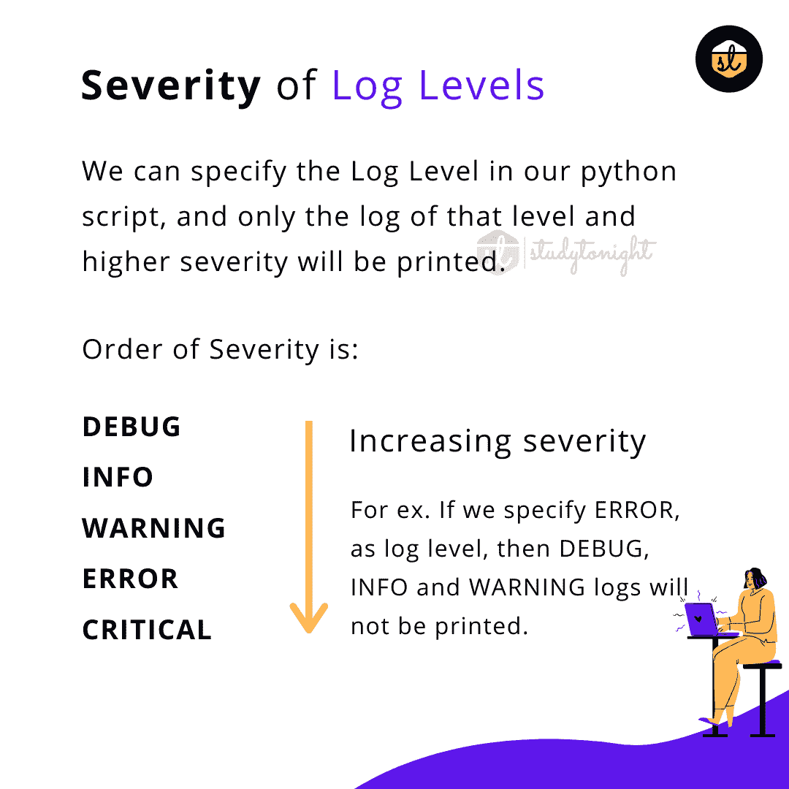

在 Python logging模块中打印日志
在本教程中，我们将学习什么是日志记录？(日志记录基础知识)，如何在 python 中打印日志以及打印日志时应该使用的不同日志级别。
首先，让我们讨论什么是日志。
什么是日志记录？
日志基本上是任何程序/脚本运行时跟踪事件(正在发生什么)的一种方式。软件开发人员在他们的软件中添加了日志调用，以在软件代码执行期间打印有用的步骤以及一些信息，这些信息可以在以后用于跟踪代码执行。
适当的日志记录可以帮助你更好地理解程序的流程，并且它非常有助于发现那些你在开发过程中可能没有想到的场景。
日志在调试问题中非常重要。
在日志的帮助下，开发人员有了一双额外的眼睛来观察应用的流程。日志可以存储信息，比如哪个用户 ID 或者哪个 IP 正在访问应用。
通过在软件应用中记录有用的数据和度量，您不仅可以轻松调试错误，还可以使用数据分析应用的性能来计划扩展。
一个事件被描述为一个描述性消息，它可以可选地包含可变数据(即，对于事件的每次发生，数据主要是不同的)。
打印的事件或日志也有一个重要性也称为日志级别，我们将在本教程的后面部分介绍。
许多初学者在 python 代码中使用print()方法来打印语句和变量，调试代码。
使用日志来做到这一点是正确的方法。
Python logging模块
logging模块是 Python 中的一个内置模块，功能强大，随时可以使用。该模块允许将日志写入文件或控制台或任何其他输出流。
这个模块被很多第三方 Python 库使用。因此，如果您的 python 项目使用许多第三方库，那么您可以使用logging模块，这样日志处理在您的项目和您正在使用的第三方库中可以是相同的。
要使用本模块，您只需编写以下内容:
import logging
导入logging模块后，可以使用logging模块提供的各种方法打印日志。
不同级别的日志消息
在logging模块中，默认有 5 个标准级别，主要指示事件的严重性。此外，日志记录函数以级别命名。
这些级别按严重程度的递增顺序如下所示:

让我们在下表中逐一讨论每个级别的含义:
| 级 | 使用时间 | | 调试 | 该级别主要用于提供详细信息，一般只有在调试问题时才有兴趣。 | | 信息 | 这个级别用来确认事情是否按预期进行。只是平常的信息。 | | 警告 | 这个级别告诉发生了意想不到的事情但不要太严重，可能会影响程序/软件的正常运行。 | | 错误 | 这应该用于记录更严重的问题，如导致功能被破坏的错误或异常。 | | 批评的 | 该级别表示超级严重错误，如应用未启动或数据库不可用建立连接等。 |
您可以在 python 代码中使用所有类型的日志级别来记录不同的信息。
但是将打印什么日志，取决于日志配置。
需要注意的是默认级别为WARNING，这意味着只跟踪该级别及以上的事件，分别为:警告、错误和严重。
Python 日志记录方法
对于简单的日志使用，有一些方便的功能，如debug()、info()、warning()、error()和critical()。让我们一个接一个地讨论它们:
| 如何登录？ | 要执行的任务 |
| print()方法 | 如果您想在控制台上显示用户信息的正常消息。 |
| warning.warn()和logging.warn() | 记录关于特定运行时事件的警告。如果问题是可避免的，并且必须进行更改以消除警告，则在 python 代码中使用warning.warn()方法。logging.warning()方法用于出现一些小问题/错误的情况，这些小问题/错误对代码的运行没有任何直接影响，但必须进行跟踪，因为它可能会在以后导致问题。比如模块版本不匹配等。 |
| 引发错误/异常 | 以便报告关于特定运行时事件的错误。 |
| logging.error()或logging.critical() | 如果您想在不引发异常的情况下报告错误。如果你已经在 python 中做了正确的异常处理，但是你仍然必须记录处理的异常，以便以后可以发现和修复它。logging.critical()可用于程序启动失败或数据库连接失败等关键错误。 |
| logging.info()或logging.debug() | logging.info()方法可用于报告程序正常运行期间发生的事件(例如，用于状态监控或故障调查)。logging.debug()专门用于诊断目的的非常详细的输出。 |
Python 日志记录基本示例
让我们举一个基本的例子，我们将打印对应于不同日志级别的日志消息:
import logging
logging.debug('It is a debug message') # it will not be printed
logging.info('It is an info message') # not printed
logging.warning('OOPs!!! It is a warning') # it will be print because it is default level
logging.error('Oops !! an error message') # will be printed
logging.critical('Oh!!!! it is a critical message') # will be printed
警告:根:哎呀！！！这是一个警告错误:根:哎呀！！错误消息 CRITICAL:root:哦！！！！这是一个重要的信息
上面的输出显示了每个消息之前的严重级别以及root，这是日志记录模块给其默认日志记录程序的名称。
上面的输出格式显示了级别、名称和消息，并用冒号(:)隔开，是日志的默认格式(我们可以更改格式)。
需要注意的是debug()和info()消息没有被记录。这是因为，默认情况下，日志记录模块记录的消息具有严重级别**警告**或以上，正如我们已经提到的。
如果您愿意，也可以通过配置logging模块来记录所有级别的事件来改变这一点。